Introduction to Reinforcement Learning
Topics
First thread: prediction & planning:
- Monte Carlo (MC) prediction (episodic evaluation).
- Temporal Difference (TD) prediction (bootstrapping).
- Monte Carlo Tree Search (MCTS) (planning with a model).
- UCT (exploration vs exploitation inside search).
Second thread: model-free control:
- MC control (prediction + policy improvement loop).
- TD control → Q-learning, SARSA.
Third thread: approximation:
- Value function approximation (linear → deep).
- Policy approximation (policy gradients).
- Actor–critic (integration of both).
Textbook
Reinforcement Learning, An Introduction, Second Edition Sutton and Barto, MIT Press, 2020
- Available free at : http://www.incompleteideas.net/book/RLbook2020.pdf
Learning and Planning
Two fundamental problems in sequential decision making
Planning (first half of the subject):
A model of the environment is known
The agent performs computations with its model (without any external interaction)
The agent improves its policy through search, deliberation, reasoning, and introspection
Reinforcement Learning (this half of the subject):
The environment is initially unknown
The agent interacts with the environment
The agent improves its policy
Atari Example: Reinforcement Learning
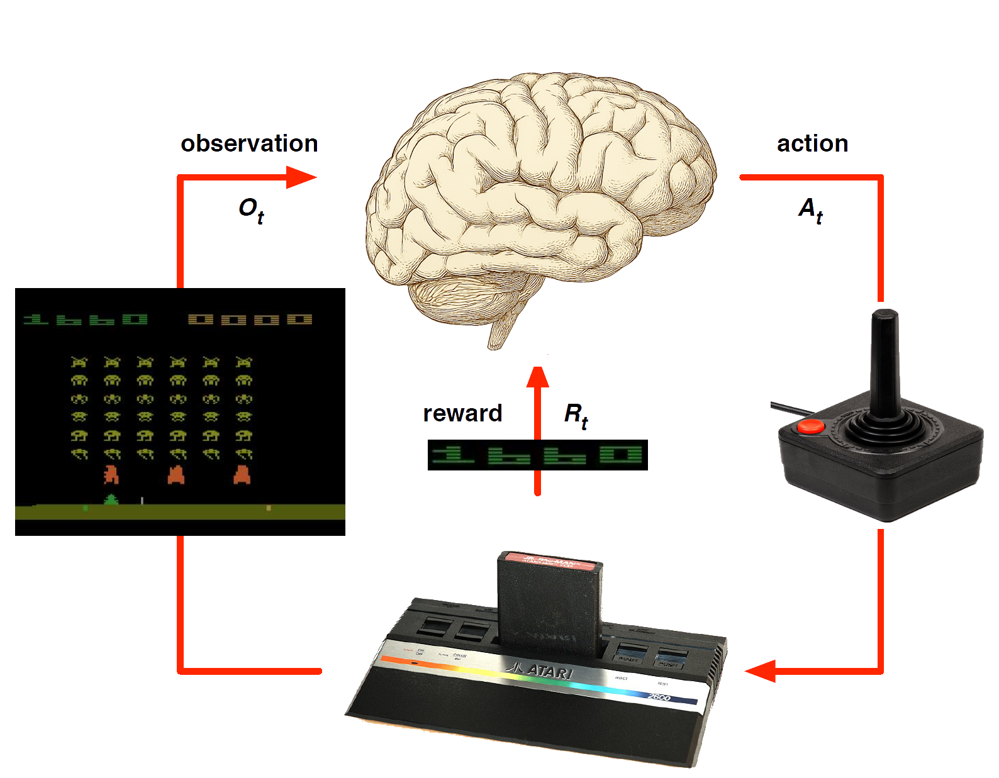
Rules of the game are unknown
Learn directly from interactive game-play
Pick actions on joystick, only see pixels and scores (observations)
Atari Example: Planning
Rules of the game are known
Can query emulator
- perfect model inside agent’s brain
If I take action \(a\) from state \(s\):
what would the next state \(s'\) be?
what would the score be?
Plan ahead to find optimal policy, e.g. tree search
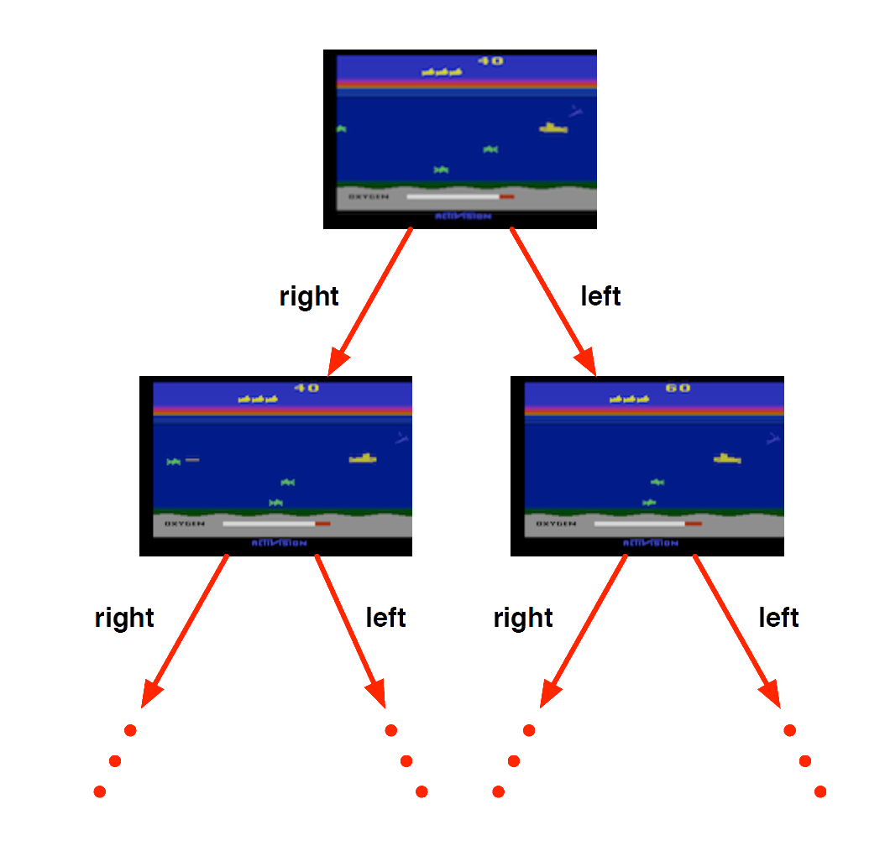
Characteristics of Reinforcement Learning
What makes reinforecement learning different from automated planning?
- The outcomes of actions are non-deterministic
- Uses probabilistic representation
What makes reinforcement learning different from other machine learning paradigms?
- Sequence matters, i.e. it involves non-i.i.d. (independent and identically distributed) data
- There is no supervisor, only a reward signal
- Feedback is delayed, not instantaneous
Examples of Reinforcement Learning
- Make a humanoid robot walk
- Train an LLM using human feedback
- Control a power station
- Optimise operating system routines
- Manage an inverstment portfolio
- Control inventory in a warehouse
Example: Make a humanoid robot walk
Atlas demonstrates policies using RL based on human motion capture and animation-Boston Dynamics ’25
Example: Train an LLM using human feedback
Proximal policy update (PPO) is used in training pipeline of ChatGPT. Group relative policy optimisation (GRPO) is used in DeepSeek (Ari Seff, watch from 7:22).
Example: Control a power station
Example: Optimising operating system routines
2023, Daniel J. Mankowitz, et al. Faster sorting algorithms discovered using deep reinforcement learning, Nature, Vol 618, pp. 257-273
DeepMind’s AlphaDev, a deep reinforcement learning agent, has discovered faster sorting algorithms, outperforming previously known human benchmarks.
- These algorithms have been integrated into the LLVM standard C++ sort library.
Example: Control inventory in a warehouse
Respond to the demand for different products stocked in a warehouse over time.
Goals:
- Order the necessary goods to meet demand
- Avoid running out of stock (stock-outs)
- Respond to seasonal demand
- Dynamically respond to changing trends and fashions
Rewards
Rewards
- A reward \(R_t\) is a scalar feedback signal.
- Indicates how well agent is doing at step \(t\)
- The agent’s job is to maximise cumulative reward
Reinforcement learning is based on the reward hypothesis
Definition (Reward Hypothesis):
All goals can be described by the maximisation of expected cumulative reward.
Example of Rewards
- Make a humanoid robot walk
- -ve reward for falling
- +ve reward for forward motion
- Optimise operating system routines
- -ve reward for execution time
- +ve reward for throughput
- Control a power station
- +ve reward for containment of plasma
- -ve reward for plasma crashing
- Control inventory in a warehouses
- -ve reward for stock-out penalty (lost sales)
- -ve reward for holding costs (inventory)
- +ve reward for sales revenue
Sequential Decision Making
Sequential Decision Making
Goal: select actions to maximise total future reward
Actions may have long term consequences
Reward may be delayed
It may be better to sacrifice immediate reward to gain more long-term reward
Examples:
A financial investment (may take months to mature)
Re-stocking warehouse (might prevent a stock-outs in days or weeks)
Agent
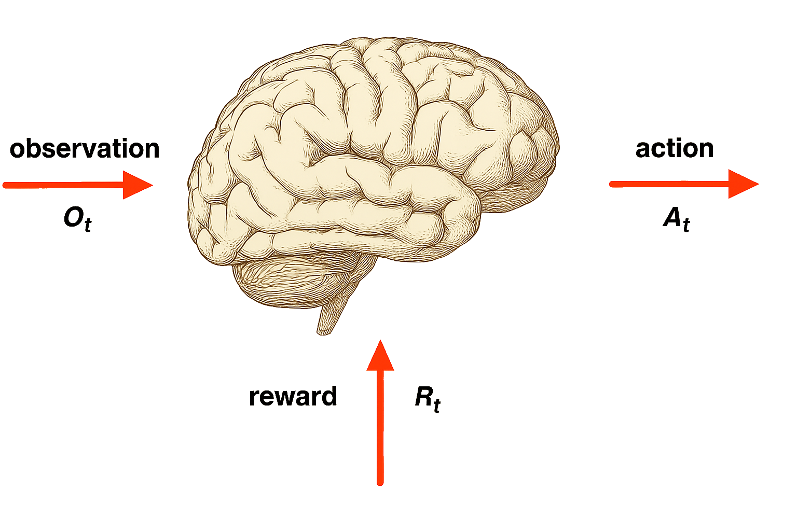
Agent and Environment
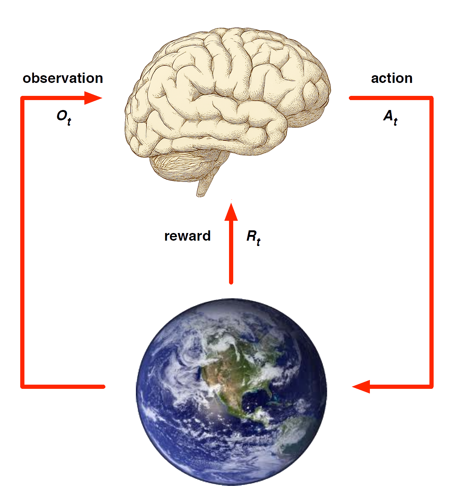
At each step \(t\) the agent:
Executes action \(A_t\)
Receives observation \(O_t\)
Receives scalar reward \(R_t\)
The environment:
Receives action \(A_t\)
Emits observation \(O_{t+1}\)
Emits scalar reward \(R_{t+1}\)
\(t\) increments at env. step
History and State
The history is sequence of observations, actions, rewards
\[ H_t = O_1,R_1,A_1, \ldots A_{t-1}, O_t, R_t \] - i.e. the stream of a robot’s actions, observations and rewards up to time \(t\)
What happens next depends on the history:
- The agent selects actions, and
- the environment selects observations/rewards.
State is the information used to determine what happens next.
Formally, a state is a function of the history: \(S_t = f(H_t )\)
Environment State
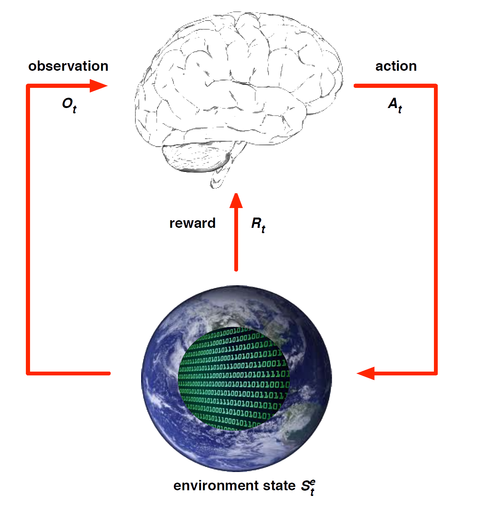
The environment state \(S^e_t\) is the environment’s private representation
- i.e. data environment uses to pick the next observation/reward
The environment state is not usually visible to the agent
- Even if \(S^e_t\) is visible, it may contain irrelevant info
Agent State
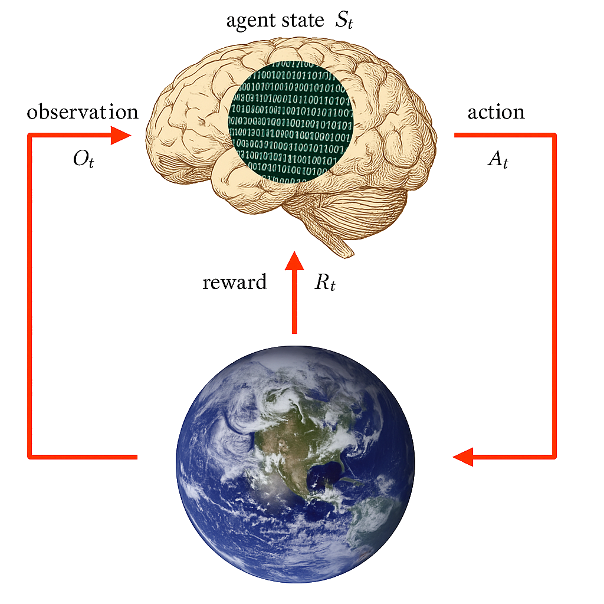
The agent state \(S^a_t\) is the agent’s internal representation
i.e. information the agent uses to pick the next action
i.e. information used by reinforcement learning algorithms
It can be any function of history: \(S^a_t = f(H_t)\)
Information State
An information state (a.k.a. Markov state) contains all useful information from the history.
Definition: A state \(S_t\) is Markov if and only if \[ \mathbb{P} [S_{t+1} | St ] = \mathbb{P} [S_{t+1} | S_1, \ldots, S_t ] \] “The future is independent of the past given the present” \[ H_{1:t} \rightarrow St \rightarrow H_{t+1:\infty} \]
Once the state is known, the history may be thrown away
i.e. The state is a sufficient statistic of the future
The environment state \(S^e_t\) is Markov
The history \(H_t\) is Markov
Rat Example
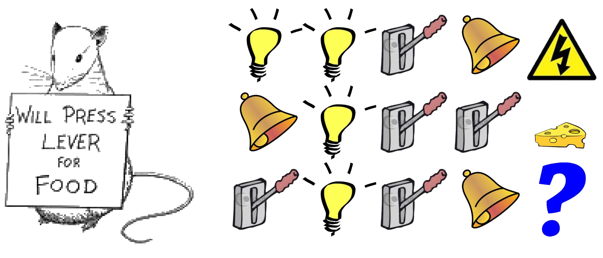
What if agent state = last \(3\) items in sequence?
What if agent state = counts for lights, bells and levers?
What if agent state = complete sequence?
Components of an RL Agent
Components of an RL Agent
An RL agent may include one or more of these components:
Policy: agent’s behaviour function
Value function: how good is each state and/or action
Model: agent’s representation of the environment
Policy
A policy is the agent’s behaviour
It is a map from state to action, e.g.
Deterministic policy: \(a = \pi(s)\)
Stochastic policy: \(\pi(a|s) = \mathbb{P}[A_t = a|S_t = s]\)
Value Function
Value function is a prediction of future reward
Used to evaluate the goodness/badness of states,
and therefore to select between actions, e.g.
\[ v_{\pi}(s) = \mathbb{E}[R_{t+1} + \gamma R_{t+2} + \gamma^2 R_{t+3} + \ldots | S_t = s] \]
Model
A model predicts what the environment will do next
\(\mathcal{P}\) predicts the next state
\(\mathcal{R}\) predicts the next (immediate) reward, e.g.
\[ P^a_{ss'} = \mathbb{P}[S_{t+1} = s' | S_t = s, A_t = a] \]
\[ R^a_s = \mathbb{E}[R_{t+1} | S_t = s, A_t = a] \]
Maze Example
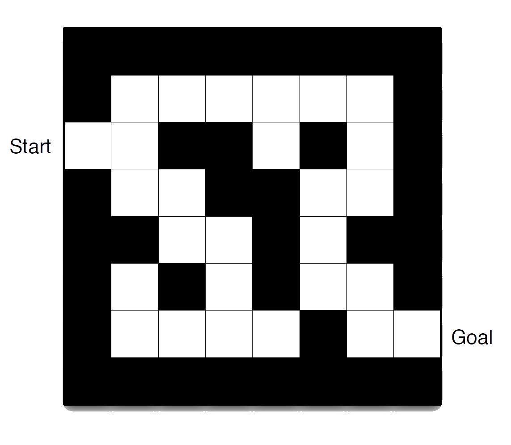
- Rewards: -1 per time-step
- Actions: N, E, S, W
- States: Agent’s location
Maze Example: Policy
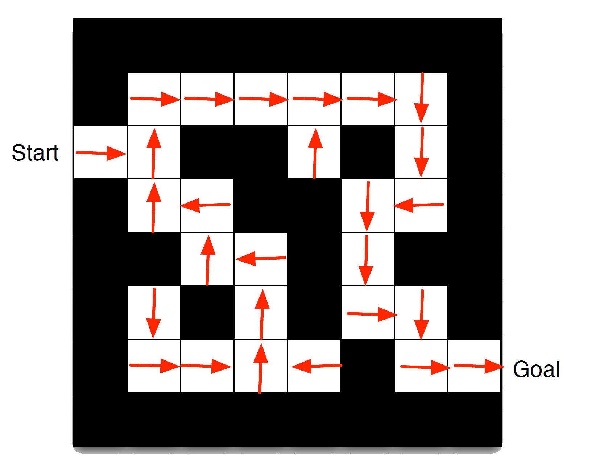
- Arrows represent policy \(\pi(s)\) for each state \(s\)
Maze Example: Value Function
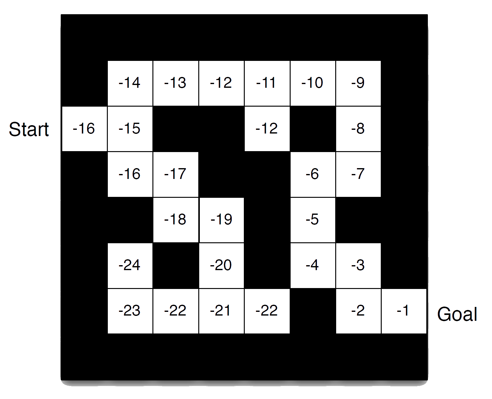
- Numbers represent value \(v_{\pi}(s)\) of each state \(s\)
Maze Example: Model
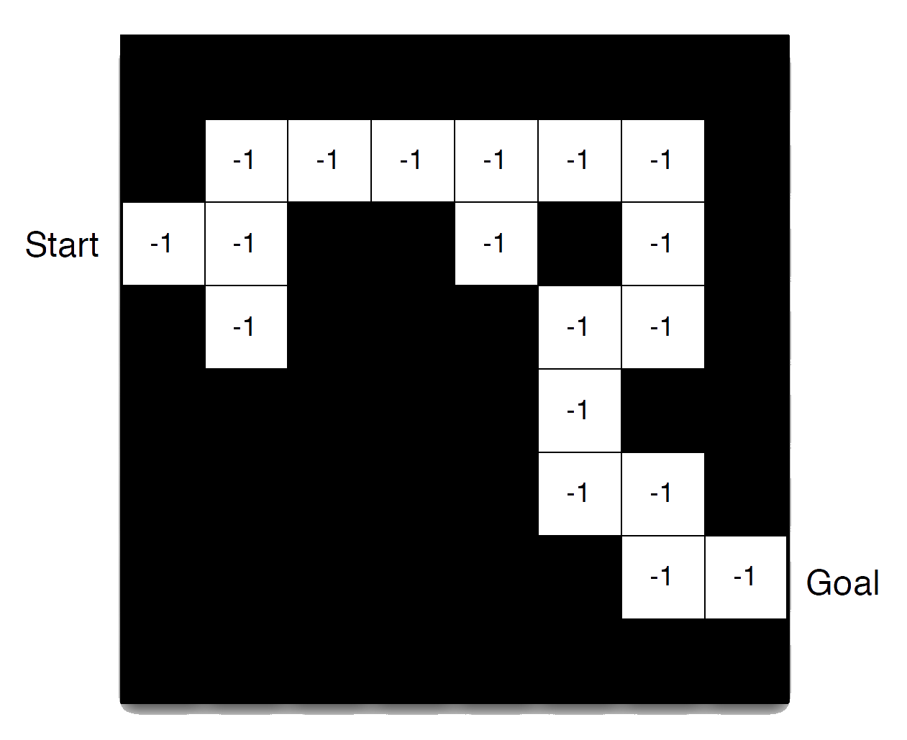
Agent may have an internal model of the environment
Dynamics: how actions change the state
Rewards: how much reward from each state
The model may be imperfect
Grid layout represents transition model \(\mathcal{P}^a_{ss'}\)
Numbers represent immediate reward \(\mathcal{R}^a_s\) from each state \(s\) (same for all \(a\))
Categorizing RL agents
Categorizing RL agents
Value Based
No Policy (Implicit)
Value Function
Policy Based
Policy
No Value Function
Actor Critic
- Policy
- Value Function
Model Free
Policy and/or Value Function
No Model
Model Based
Policy and/or Value Function
Model
Taxonomy
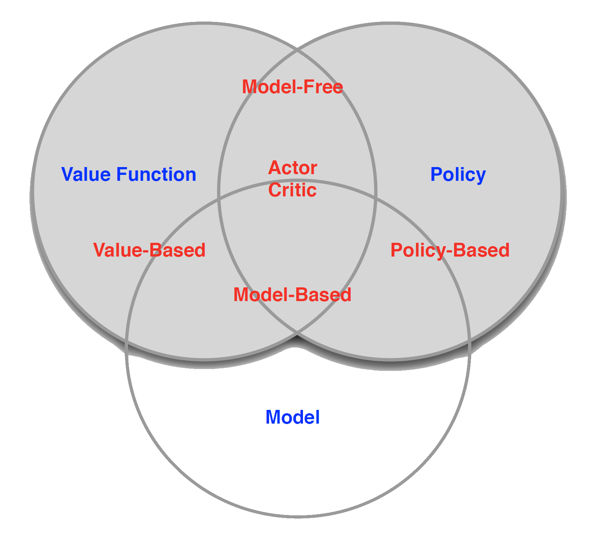
Exploration and Exploitation
Reinforcement learning is like trial-and-error learning
The agent should discover a good policy
From its experiences of the environment
Without losing too much reward along the way
Exploration finds more information about the environment
Exploitation exploits known information to maximise reward
It is usually important to explore as well as exploit
Examples
Restaurant Selection
Exploitation Go to your favourite restaurant
Exploration Try a new restaurantOnline Banner Advertisements
Exploitation Show the most successful advert
Exploration Show a different advertGold exploration
Exploitation Drill at the best known location
Exploration Drill at a new locationGame Playing
Exploitation Play the move you believe is best
Exploration Play an experimental move
Prediction and Control
Prediction: evaluate the future
- Given a best policy
Control: optimise the future
- find the best policy
We need to solve the prediction problem in order to solve the control problem
- i.e. we need evaluate all of our polcies in order to work out which is the best one